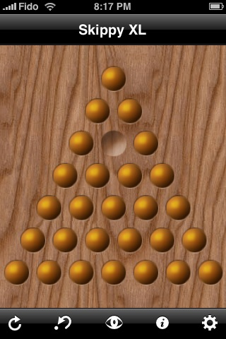

Motivation
I've been playing Skippy Lite and Skippy XL on my iPhone since I got it. I've solved many of the boards, but I could not find a solution to the triangle board pictured here.
After many hours wasted getting no closer than having 2 balls left, I decided it would take me less time to write a program to find a solution (or show there was no solution) than to actually solve it myself.
I have access to the UVic Department of Computer Science's 42-node IBM BladeCenter cluster. I installed the open-source Disco MapReduce system on it a few weeks ago for a school project. I knew an exhaustive search would have exponential growth but with 160 cores available for brute force computation, an answer was very attainable.
Disco is written in Erlang and Python. Disco MapReduce jobs are typically written in Python.
Finding a solution
Simple: make every possible sequence of moves to see if any of those sequences is long enough to have one ball remaining.
Each move removes one ball, so a solution removes 26 balls in 26 moves.
Symmetry to the rescue
Thankfully the board has symmetries - six to be exact. The board looks the same if it is rotated 120 or 240 degrees, or flipped upon any of three axes from a point through the opposite edge. This fact will be exploited to avoid searching many duplicate puzzles.
Using MapReduce to simply eliminate duplicates
A MapReduce framework requires two pure functions, map and reduce. The map function accepts data and outputs one or more intermediate key-value pairs. The framework collects all the pairs with the same keys and calls the reduce function for each key with all of its corresponding values.
To find a solution, I executed a MapReduce job 26 times, the number of moves required to see if there exists a puzzle with two balls and available moves. (I've found plenty of puzzles with two balls but no available moves! )
The first iteration's map function has only one input record - the puzzle in its initial state with no moves taken. The output of the reduce function is the input for the second iteration. The output of the twenty-six iterations would contain all the solutions (excluding duplicates due to symmetry since they are discarded).
The map function
The map function accepts a puzzle, which includes the state of the board and the sequence of moves taken to transition to that state.
I denoted a puzzle by a Python dictionary containing two keys: 'board' and 'moves'. The 'board' key points to a list of 28 boolean values - True if a hole contains a ball, False otherwise. the 'moves' key points to a list of lists. Each sub-list contains 3 integers:
The number of the hole: whose ball jumps, whose ball is jumped over, and the ball lands in. For example, [0, 1, 3] means the ball in hole 0 jumps the ball in hole 1 to land in hole 3.
The map function simply generates a new puzzle for each available move. The output key is the "signature" for the generated puzzle. The output value is the generated puzzle.
Finding available moves
This is actually very simple!
The board is a 28 element array of booleans and a move is 3 integers. A move [x, y, z] is available if puzzle['board'][x] is True and puzzle['board'][y] is True and puzzle['board'][z] is False.
The set of possible moves on the board is quite small (12 holes have two possible moves, the centre hole has six, the rest have four each).
Calculating the signature
Remember the six symmetries? This is where we take advantage of them to speed our way to the solution.
A signature is a simple 28 character encoding of the puzzle. Enumerate the holes; each character in the string is a '*' or a 'O' depending on whether or not a ball exists in the corresponding hole. The signature of a puzzle comes from the configuration of the board which provides the lexicographically smallest encoding.
Six permutations corresponding to zero degrees of rotation, 120 degrees of rotation, 240 degrees of rotation, and reflection upon each of three axes are used to find the smallest encoding. Rather than generating six complete signatures, permutations is tested against another for as few spaces as required to determine the smallest.
The result is, if two puzzles with the same number of balls left have the same signature, it means either their board is identical or they can be made identical by performing one of the 5 rotation/reflection transformations. There is no point in exploring both since their potential for a solution is also identical.
The number of available moves for a puzzle is quite small when the board is nearly full or nearly empty, but much larger when approximately half of the balls remain.
Note that if a puzzle has no available moves, map will not generate any output for it, and thus failed games simply "die" naturally and generate no work for subsequent iterations.
The reduce function
TODO: Only output one puzzle per signature.
Between each iteration
TODO: Data must be collected and distributed to the nodes for the next iteration
Result
TODO: Must be verified, but no solution was found.